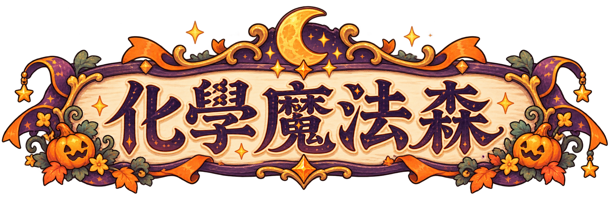
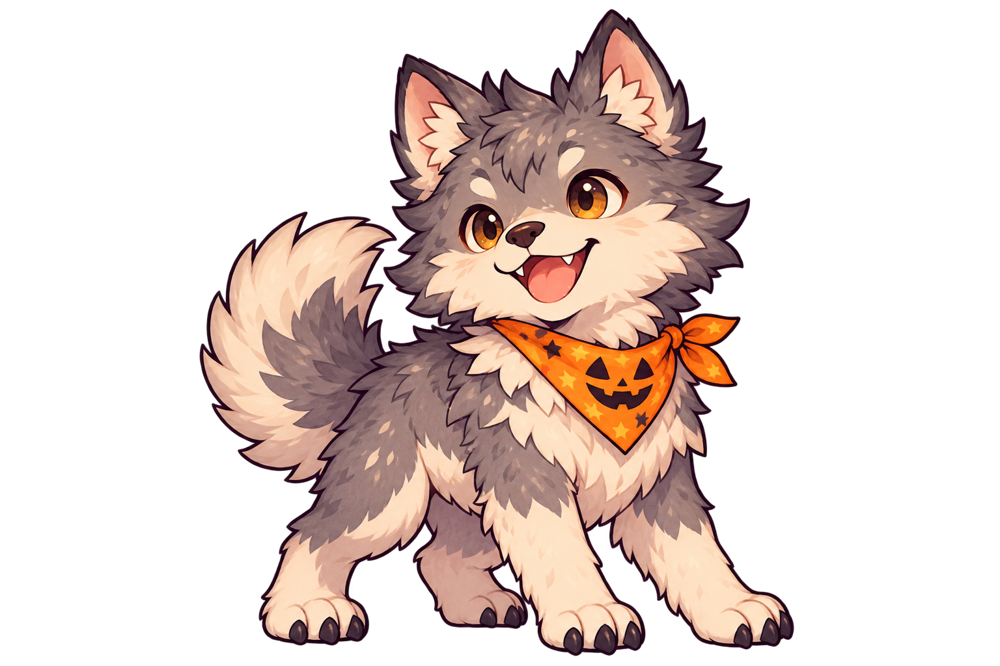

每關 6 題，答對造成傷害並獲得金幣；答錯受到反擊並揭曉正解。
HALLOWEEN CHEMISTRY QUEST穿越森林，
穿越森林，
成為學測魔法師。
帶著 100 HP，走進南瓜燈照亮的魔法森林。
用化學知識，迎戰五位萬聖節守關者。
題庫：學測模擬試題_30題.pdf
原卷為高一基礎化學，供高三學測複習使用。

30 QUESTIONS · 5 CHALLENGES每關結束造訪商店。藥水補血、水晶增傷、復活符自動救援。
每關答完 6 題即可前進；怪物若仍有血量會撤退。完成 30 題查看成績。
魔法師生命
金幣
魔法攻擊
復活符

知識試煉
電腦可用 1–4 選答案，Enter 前進；手機直接點選。
森林補給站
歇一下，再出發。
目前持有 金幣 · HP